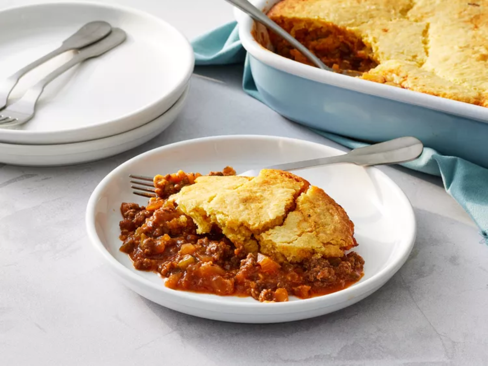
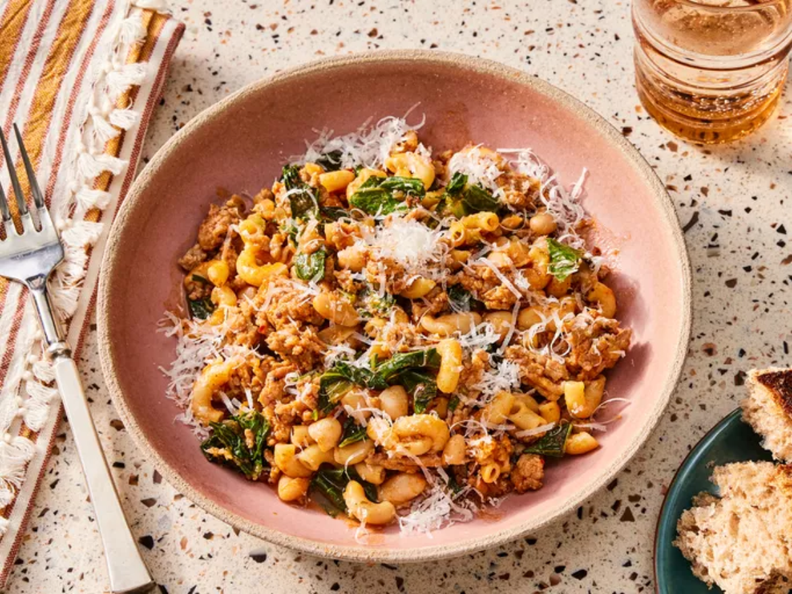

Home
About
Welcome to Odin Recipes!
Sloppy Joe Cornbread Casserole
Clam Chowder
Pasta Fazool (Pasta e Fagioli)
Cheesy Scalloped Potatoes with Ham
 Clam Chowder
Clam Chowder Cheesy Scalloped Potatoes with Ham
Cheesy Scalloped Potatoes with Ham